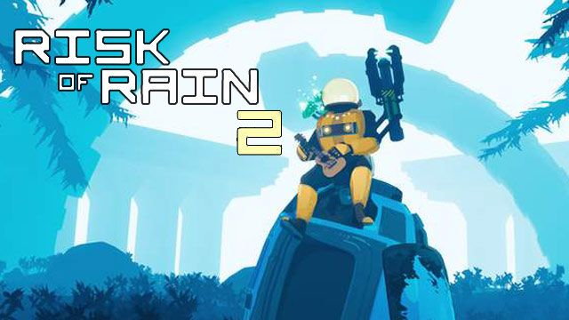
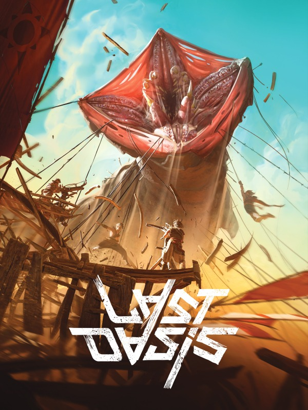
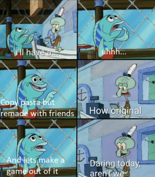

My name is jack, im around 16 years old. I am intrested in games and some other stuff, Below are some of my favorite games.
 Noah, and James Linge, Went to school at a small place named prescott. Noah kept to himself. Drawing pictures of zelda and doing weird stuff while James talked about Quantum physics with his teacher. Life was simple. and they were both happy. That was, until the voice of mrs. sponholz spoke to him. "Noah your grades are garbage. You need to get better grades or else you will be expelled" "yes mrs. sponholz, i will do my best" as he LOCKED himself out of society, trying to get that c- he will never achieve. "Your grades are still garbage, you need to disconnect yourself with all that is unholy" "of course mrs. Sponholz, i have faith in thee" Noah replied, as he cut all contact with james and his friends. one last time, mrs. sponholz spoke to him. "I can see you trying, but i still question your motivation to better yourself, i must require a SACRIFICE, your friend James, will be this sacrifice" ". . . yes teacher" James, looking through a crack in the door, scrambled around the science room for anywhere to hide, he saw a L E M O N on the floor, right as NOAH came in with the bible and his fedora. James QUICKLY picked up the lemon and chanted the sacred texts, as he flung his mind, body and soul into the deep depths below.
"watch me end this whole mans career" - Barrel
"some experts point to the walnuts eerie resemblance to the human brain as a sign of its sentience, which all walnuts vehemently object to"
